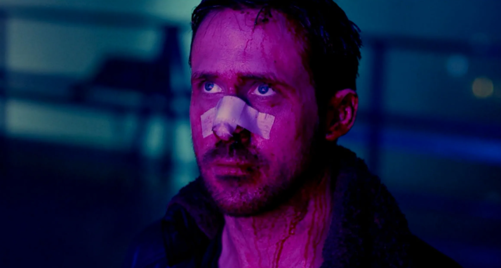
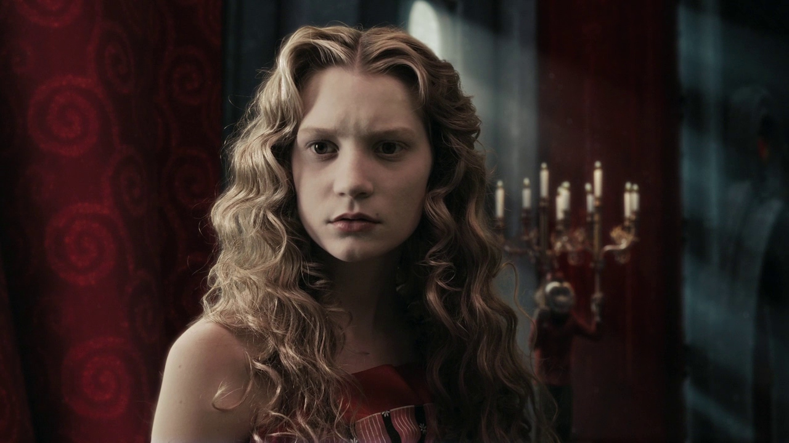

Офицер LAPD Кей
Один из запоминающихся персонажей времен 2010х годов - это главный фильма "Бегущий по лезвию 2049". В недалеком будущем мир населен людьми и репликантами, созданными выполнять самую тяжелую работу. Работа офицера полиции Кей — держать репликантов под контролем в условиях нарастающего напряжения. Он случайно становится обладателем секретной информации, которая ставит под угрозу существование всего человечества. Желая найти ключ к разгадке, Кей решает разыскать Рика Декарда — бывшего офицера специального подразделения полиции Лос-Анджелеса, который бесследно исчез много лет назад.
Алиса
Еще один запоминающийся культовый персонаж 2010х годов - Алиса, по совместительству главная героиня фильма "Алиса в Стране чудес". Жизнь 19-летней Алисы Кингсли принимает неожиданный оборот. На викторианской вечеринке, устроенной в её честь, Алисе делает предложение Хэмиш, богатый, но глупый сын лорда и леди Эскот. Не дав ответа, девушка убегает и идёт за кроликом, замеченным ею на лужайке. Кролик как кролик, вот только он одет в камзол и всё время смотрит на карманные часы. Алиса гонится за Белым Кроликом через весь луг и видит, как он исчезает в кроличьей норе. Затем, неожиданно, Алиса падает туда сама, летит вниз по странному, сказочному туннелю и приземляется в круглом зале со множеством дверей. Выпив из бутылки с надписью «ВЫПЕЙ МЕНЯ», она уменьшается в размерах, а откусив от пирожного с надписью «СЪЕШЬ МЕНЯ» — вырастает.
